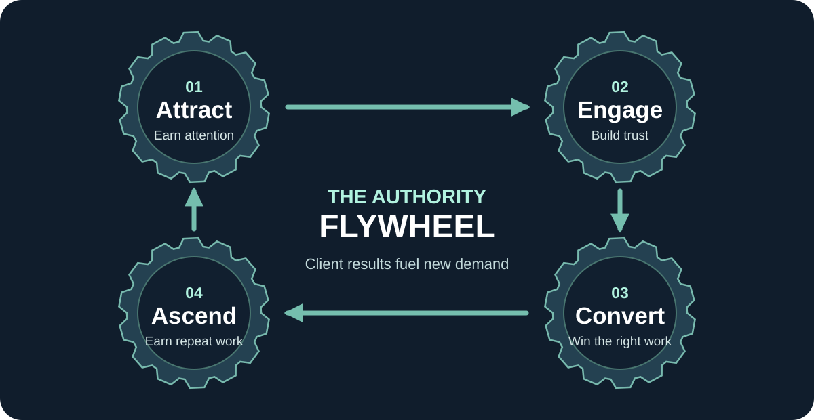
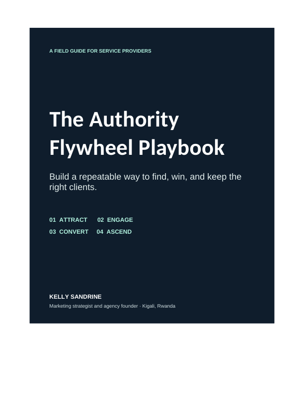
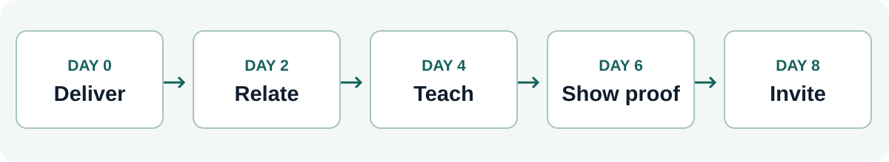
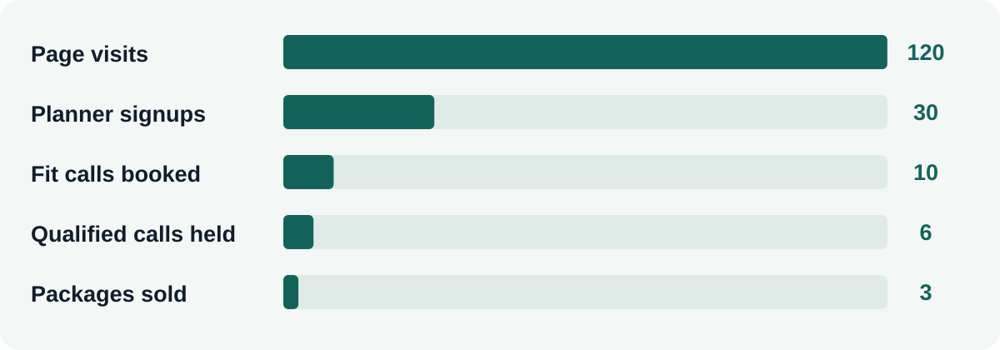

Fitness coach
You post helpful tips, but the people in your DMs want a free routine. You need a way to see who’s ready for ongoing coaching.
Start with a one-page weekly training planner.
For independent service providers
Follow a personal trainer from one useful post to a paid coaching plan. Then use the emails, proposal, and weekly tracker to build that path for your own service.
One-time purchase · Digital download
Start where clients get stuck
You post helpful tips, but the people in your DMs want a free routine. You need a way to see who’s ready for ongoing coaching.
Start with a one-page weekly training planner.
You get views and compliments, but the brands you want rarely send a useful brief. You need to make it clear what they can hire you for.
Start with a short-form video brief.
You spend time on custom quotes, then wait for answers. You need an offer with a clear scope and a next step the buyer understands.
Start with a packaging brief checklist.
The four-gear system
The work that earns attention should lead to a useful conversation. The work you deliver should give you something you can use to earn the next one.

Speak to one buyer and give them a practical reason to take the next step.
Follow up with a useful resource, an example, and a clear invitation.
Ask what the buyer needs, agree on the scope, and make the next decision easy to understand.
Review the work and take the next useful step: support, a referral, or approved proof.
Free starting-point diagnostic
Choose the role closest to yours and the problem you see most often. You’ll get one action you can take this week.



What you get
Work through one gear at a time, or use the 30-day plan to build and test your first complete client path.
“Before this playbook, I was stuck in the endless hustle of cold pitching. The Attract gear alone changed how I think about content. Within 6 weeks I had my first ever inbound lead.”
“Kelly doesn’t give you fluff. The 30-Day Launch Plan is insane, I had something to do every single day and knew exactly why I was doing it. Month 2 I signed two retainers.”
“I went from charging per-hour to a retainer model, and my first client at the new price didn’t even negotiate.”
Before you buy
Yes. Start with one service and a clearly labeled demonstration. The sprint includes alternatives for days that would otherwise require a testimonial, a booked call, or a live project.
You’ll have tasks for building and testing a lead magnet, a follow-up sequence, an offer, and a handoff. This is not a get-rich-quick scheme. You’ll still need to create, publish, talk to buyers, and follow through. Sales and income depend on your market and execution.
Start with a signup form, an email platform, and a simple spreadsheet. You can adapt the examples to tools you already use. Check plan limits before adding an automation.
You’ll go to the Kaazi product page, where the price is shown in Rwandan francs and the product is delivered as a digital download after payment.
The Authority Flywheel Playbook
Pick one service. Use the first worksheet to decide who it’s for and what those buyers should do next.